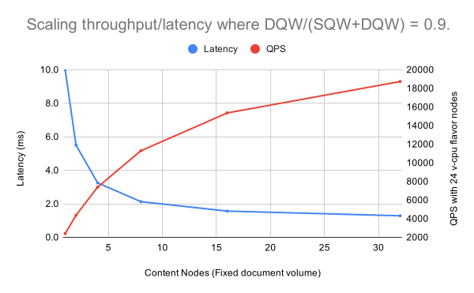
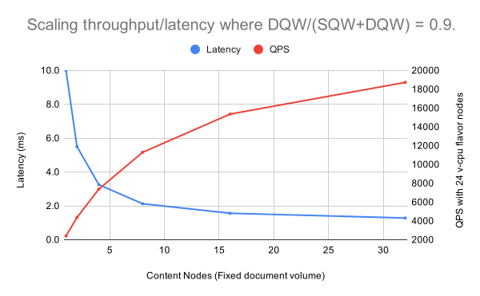

Will it scale? is a question we hear a lot? The answer is usually yes as Vespa can scale in any dimension:
This document covers sizing and capacity planning for serving, see feed performance sizing for feed performance sizing and Vespa serving feature tuning. It also covers the following topics:
The basic element in the Vespa search architecture is a content node, which is part of a content cluster. A Vespa deployment can have several content clusters, which can be scaled independently.
A content node holds a fraction of the entire data corpus. Data is distributed to nodes using a distribution algorithm, which goal is to uniformly distribute data over the set of nodes. The goal is also to avoid distribution skew, while at the same time supporting re-distribution of data, with minimal data movement, if the size of the content cluster changes. Read elastic Vespa to learn how data is distributed across nodes, and how adding or removing nodes works. See also Vespa's consistency model documentation.
With a flat distribution, the content is distributed to content nodes using the ideal state distribution algorithm. A query is dispatched in parallel from a container instance to all content nodes in the content cluster. Each content node searches the active part of the ready sub-database. The above figure illustrates a deployment using 4 nodes with redundancy 2 and searchable-copies 2 - see the availability section.
When using flat data distribution, the only way to scale query throughput is to reduce the search latency. Given a fixed occupancy (users, load clients), this relationship between query throughput and latency is described by Little's law - more on this in content cluster scalability model section.
With a grouped distribution, content is distributed to a configured set of groups, such that the entire document collection is contained in each group. A group contains a set of content nodes where the content is distributed using the distribution algorithm. In the above illustration, there are 4 nodes in total, 2 groups with 2 nodes in each group. redundancy is 2 and searchable-copies is also 2. As can seen from the figure with this grouped configuration, the content nodes only have a populated ready sub-database. A query is dispatched in parallel to all nodes in one group at a time using a dispatch-policy. The default policy is adaptive, which loadbalances over the set of groups, aiming at even latency.
Ideally, the data is available and searchable at all times, even during node failures. High availability costs resources due to data replication. How many replicas of the data to configure, depends on what kind of availability guarantees the deployment should provide. Configure availability vs cost:
| redundancy | Defines the total number of copies of each piece of data the cluster will store and maintain to avoid data loss. Example: with a redundancy of 2, the system tolerates 1 node failure before any further node failures may cause data to become unavailable. |
|---|---|
| searchable-copies | Configures how many of the copies (as configured with redundancy) to be indexed (ready) at any time. Configuring searchable-copies to be less than redundancy saves resources (memory, disk, cpu), as not all copies are indexed (ready). In case of node failure, the remaining nodes needs to a index the not ready documents which belonged to the failed node. In this transition period, the search has reduced search coverage. |

The above figure illustrates the three sub-databases inside a Vespa content node.
With searchable-copies=2 and redundancy=2, each replica is fully indexed on separate content nodes. Only the documents in Active state is searchable, the posting lists for a given term is (up to) doubled as compared to searchable-copies=1.
See Content cluster Sizing example deployments for examples using grouped and flat data distribution.
Vespa executes a query in two protocol phases (or more if using result grouping features) to optimize the network footprint of the parallel query execution. The first protocol phase executes the query in parallel over content nodes in a group to find the global top hits, the second protocol phase fetches the data of the global top hits.
During the first phase, content nodes match and rank documents using the selected rank-profile/model. The hits are returned to the stateless container for merging and potentially blending when multiple content clusters are involved.
When the global top ranking documents are found, the second protocol phase fetch the summary data for the global best hits (e.g. summary snippets, the original field contents, and ranking features). By doing the query in two protocol phases one avoids transferring summary data for hits which will not make it into the global best hits.
Components Involved in Query Execution:
Vespa is a parallel computing platform where the work of matching and ranking is parallelized across a set of nodes and processors. The speedup we can get by altering the number of nodes in a Vespa content group follows Amdahl's law, which is a formula used to find the maximum improvement possible by improving a particular part of a system. In parallel computing, Amdahl's law is mainly used to predict the theoretical maximum speedup for program processing using multiple processors. In Vespa, as in any parallel computing system, there is work which can be parallelized and work which cannot. The relationship between these two work types determine how to best scale the system, using a flat or grouped distribution. We introduce the following concepts:
| static query work | Portion of the query work on a content node that does not depend on the number of documents indexed on the node. This is an administrative overhead caused by system design and abstractions, e.g. number of memory allocations per query term. Typically a large query tree means higher static work, and this work cannot be parallelized over multiple processors, threads or nodes. The static query work portion is described in step 1 to 4 and step 9 in the detailed life of a query explanation above. |
| dynamic query work | Portion of the query work on a content node that depends on the number of documents indexed and active on the node. This portion of the work scales mostly linearly with the number of matched documents. The dynamic query work can be parallelized over multiple processors and nodes. Referenced later as DQW. The DQW also depends on the phase two protocol summary fill where the actual contents of the global best documents is fetched from the content nodes which produced the hit in the first protocol phase. |
| Total query work | The total query work is given as the dynamic query work (DQW) + static query work (SQW). |
$$\text{max_speedup}_{\text{group}} = \frac{1}{1 - \frac{DQW}{SQW+DQW}}$$
For example, if we through metrics see that the DQW = 0.50, the maximum speedup we can get by increasing parallelism by using more nodes and decreasing DQW is 2. With fixed occupancy (number of users, clients or load), Little's Law' tells us that we cans achieve 2 times throughput if we are able to speed up the latency by 2 times:
$$\frac{1}{1 - \frac{0.5}{0.5+0.5}} = 2$$
When SQW is no longer significantly less than DQW, adding more nodes in a flat distributed cluster just increases the overall system cost. This without any serving performance gain, except increasing overall supported feed throughput, which increases almost linearly with number of nodes.
Two different DQW/(DQW+SQW) factors are are illustrated in the figures below. The overall query work TQW is the same for both cases (10 ms), but the DQW portion of the TQW is different. The throughput (QPS) is a function of the latency (Little's Law) and the number of cpu cores * nodes. Using 1 node with 24 v-cpu cores and 10 ms service time (TQW), we expect to reach close to 2400 QPS at 100% utilization (unless there are other bottlenecks like network or stateless container processing).
 

In the first figure the overall latency is 10 ms, but the dynamic query work (latency) is only 50% and given Amdahl's law it follows that the maximum speedup we can get is 2. This is true regardless of how many processors or nodes we distribute the dynamic query work over. No matter how many nodes we add, we don't get above 4800 queries/s. The only thing we achieve by adding more nodes is increasing the cost without any performance benefits.
In the second figure we illustrate a system where the dynamic work portion is much higher (0.9), and the theoretical maximum speedup becomes bound by 10x as given by Amdahl's law. Note that both figures are with a single flat distributed content cluster with a fixed document volume.
Given the theoretical explanation above we can provide two rules of thumb for scaling throughput and latency:
| Add nodes in a flat distribution | When DQW/TQW is large (close to 1.0), throughput QPS can be scaled by just adding more content nodes in a system using flat distribution. This will reduce the number of documents per node, and thus reduce the DQW per node. |
|---|---|
| Add groups using grouped distribution | When DQW/TQW is low, one can no longer just add more content nodes to scale throughput and must instead use a grouped distribution to scale throughput. |
Whether we have a single group (flat distribution) or multiple groups, the serving latency depends on the factors already described; DQW and SQW. For use cases where DQW dominates the total query work TQW, we can effectively scale latency down by parallelizing the DQW over more nodes per group.
It is important to decide on a latency service level agreement (SLA) before sizing the Vespa deployment for the application and query features. A latency SLA is often specified as a latency percentile at a certain throughput level - example:

It is possible to reduce latency of queries where the dynamic query work portion is high, query throughput is relatively low, and using a multi-cpu core node. Using multiple threads per search for a use case where the static query work is high, will be as wasteful as adding nodes to a flat distribution, as demonstrated in the previous sections.

Using more threads per search will reduce DQW and latency as long as there are cpu cores available. Typically there is a small synchronization overhead when concurrency becomes higher, as the searcher threads needs to communicate through a shared heap containing the best hits found. A search request with 4 threads will occupy all 4 threads until the last thread has completed, and the intra-node per thread document space partitioning must be balanced to give optimal results. By default this number is 1, as that gives the best resource usage measured as cpu/query. The optimal threads per search depends on the query use case, and should be evaluated by benchmarking.
The threads per search settings globally is tuned by persearch. This can be overridden to a lower value in rank profiles so that different query use cases can use different number of threads per search. Using multiple threads per search allows better utilization of multi-core cpu architectures for low query volume applications.
One want to fit as many documents as possible into a node given the node constrains (e.g available cpu, memory, disk) while maintaining:
Vespa will block feed operations if resource limits have been reached.
Disk usage of a content node increases as the document volume increases: The disk usage per document depends on various factors like the number of schemas, the number of indexed fields and their settings, and most important the size of the fields that are indexed and stored. The simplest way to determine the disk usage is to simply index documents and watch the disk usage along with the relevant metrics. The redundancy (number of copies) impact the disk usage footprint, obviously.
Note that content node maintenance jobs temporarily increases disk usage. E.g. index fusion is an example, where new index files are written, causing an increase in used disk space while running. Space used depends on configuration and data - headroom must include the temporary usage. See metrics for capacity planning.
The memory usage on a content node increases as the document volume increases. The memory usage increases almost linearly with the number of documents. The Vespa vespa-proton-bin process (content node) uses the full 64 bit virtual address space, so the virtual memory usage reported might be very high, as both index and summary files are mapped into memory using mmap and pages are paged into memory as needed.
The memory usage per document depends on the number of fields, the raw size of the documents and how many of the fields are defined as attributes. Also see metrics for capacity planning.
As seen in the previous sections, when the static query work (SQW) becomes large, scale throughput using grouped distribution. Regardless, if throughput is scaled by grouped distribution for use cases with high static query work portion or a flat distribution for high dynamic query work portion, we should identify how much throughput the total system supports.
Finding where the latency starts climbing exponentially versus throughput is important in order to make sure that the deployed system is scaled well below this throughput threshold. Also, that it has capacity to absorb load increases over time, as well as having sufficient capacity to sustain node outages during peak traffic.
At some throughput level, some resource(s) in the system will be fully saturated,
and requests will be queued up causing latency to spike up exponentially,
as requests are spending more time in the queue.
The more queries/s we try to push by increasing the load,
the longer a request needs to be in the queue waiting to be served.
This behaviour is illustrated in the figure below:
It is important to also measure behaviour under non-ideal circumstances, to avoid getting too good results. E.g. simulating node failures or node replacements, verifying feeding concurrency versus search and serving. See Serving availability tuning.
Generally, the higher utilization a system has in production, the more fragile it becomes when changing query patterns or ranking models.
The target system utilization should be kept sufficiently low for the response times to be reasonable and within latency SLA, even with some extra traffic occurring at peak hours. See also graceful degradation.
The relevant Vespa Metrics for measuring the cost factors, in addition to system level metrics like cpu util, are:
Metric capturing static query work (SQW) at content nodescontent.proton.documentdb.matching.rank_profile.query_setup_timeMetric capturing dynamic query work (DQW) at content nodes
content.proton.documentdb.matching.rank_profile.query_latency
By sampling these metrics, we can calculate the theoretical speedup we can achieve by increasing number of nodes using flat distribution, by using Amdahl's law:
$$\text{max_speedup}_{\text{}} = \frac{1}{1 - \frac{query\_setup\_time}{query\_setup\_time+match\_time}}$$
In addition, the following metrics are used to find number of matches per query per node:
content.proton.documentdb.matching.rank_profile.docs_matched content.proton.documentdb.matching.rank_profile.queriesDisk usage: